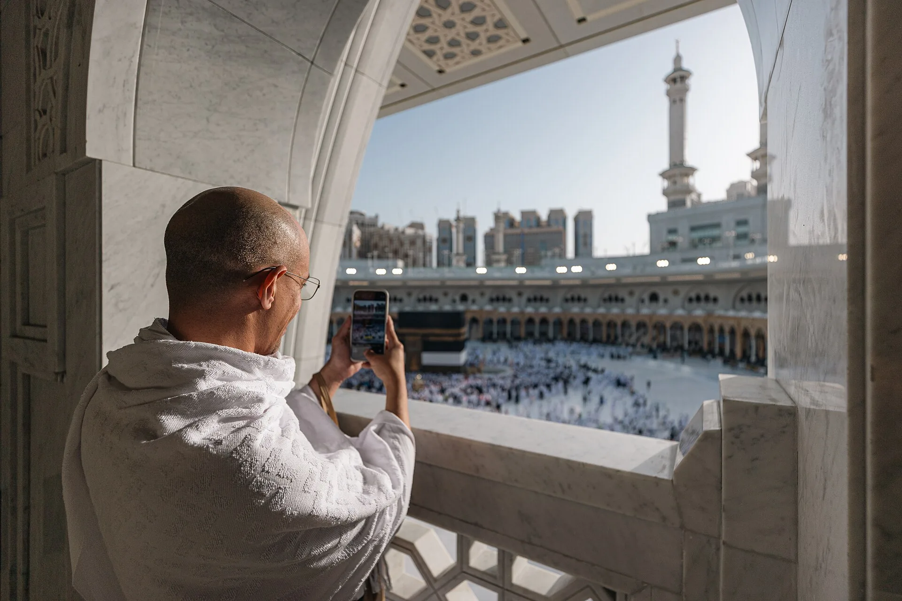
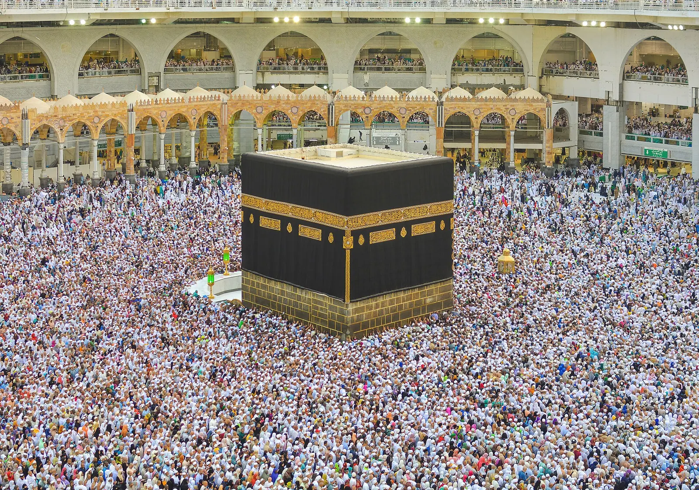

Umroh di Era Digital: Panduan Aplikasi, Teknologi, dan Persiapan Cerdas untuk Jamaah Modern

Perjalanan umroh hari ini terlihat sangat berbeda dari satu dekade lalu. Antrean visa yang dulu manual kini diproses secara elektronik, buku doa tebal digantikan aplikasi di saku, dan kabar untuk keluarga di tanah air bisa sampai dalam hitungan detik. Umroh di era digital menuntut jamaah untuk cerdas memanfaatkan teknologi — bukan sekadar mengikuti tren, tetapi agar ibadah menjadi lebih lancar, aman, dan khusyuk.
Panduan ini merangkum aplikasi yang perlu Anda siapkan, cara mempersiapkan dokumen dan koneksi secara digital, memanfaatkan teknologi selama di Tanah Suci, hingga adab bermedia sosial dan menjaga keamanan data. Tujuannya satu: teknologi menjadi pelayan ibadah Anda, bukan sebaliknya.
Teknologi Adalah Alat, Ibadah Tetap Tujuan
Sebelum membahas aplikasi dan gawai, penting menegaskan satu prinsip: niat dan kekhusyukan tetap yang utama. Smartphone bisa sangat membantu, tetapi juga bisa menjadi gangguan terbesar jika tidak dikelola. Banyak jamaah pulang dengan ratusan foto namun merasa kurang menghayati ibadahnya karena terlalu sibuk merekam.
Maka, jadikan teknologi sebagai sarana yang memudahkan — mengingatkan jadwal, memandu doa, menunjukkan arah — lalu simpan gawai saat waktunya benar-benar fokus beribadah. Dengan mindset ini, Anda mendapat manfaat digital tanpa kehilangan makna spiritual perjalanan.
Aplikasi Wajib Sebelum dan Selama Umroh
Beberapa aplikasi kini nyaris menjadi kebutuhan pokok jamaah. Instal dan pelajari cara memakainya sebelum berangkat, selagi masih ada koneksi stabil dan bisa bertanya kepada pembimbing:
- Nusuk — platform resmi Pemerintah Arab Saudi untuk izin (tasreh) umrah, reservasi masuk Raudhah di Masjid Nabawi, serta berbagai layanan jamaah. Ini aplikasi paling penting untuk diunduh.
- Tawakkalna — aplikasi layanan digital resmi Saudi yang kerap dibutuhkan untuk mengakses berbagai fasilitas dan verifikasi identitas selama di sana.
- Aplikasi manasik & doa — panduan langkah demi langkah tawaf, sai, dan kumpulan doa lengkap dengan transliterasi, agar tidak bergantung pada buku fisik.
- Al-Qur'an digital — mushaf yang bisa dibaca kapan saja, banyak yang dilengkapi murottal dan terjemahan.
- Penerjemah bahasa Arab — memudahkan komunikasi dengan petugas, sopir, atau pedagang; pilih yang mendukung mode offline dan terjemahan kamera.
- Peta & navigasi offline — unduh peta Makkah dan Madinah agar tetap bisa menemukan jalan kembali ke hotel meski sinyal lemah.
- Konversi mata uang — membantu memperkirakan harga dalam rupiah saat berbelanja oleh-oleh.
Persiapan Digital Sebelum Berangkat
Kesiapan digital dimulai dari rumah. Beberapa langkah sederhana ini bisa menyelamatkan Anda dari banyak kerepotan di Tanah Suci:
- Simpan salinan dokumen penting — paspor, visa, tiket, kartu identitas rombongan, dan bukti vaksinasi dalam bentuk foto atau PDF di ponsel dan penyimpanan awan (cloud). Simpan juga versi cetak sebagai cadangan.
- Siapkan koneksi internet — aktifkan eSIM Arab Saudi sebelum berangkat, atau rencanakan membeli kartu SIM lokal di bandara. Ini jauh lebih praktis daripada mencari Wi-Fi.
- Bawa power bank — ponsel akan bekerja keras untuk peta, kamera, dan komunikasi. Power bank berkapasitas cukup adalah penyelamat, terutama saat seharian di luar hotel.
- Catat nomor penting — kontak pembimbing, muthawif, kantor travel, dan perwakilan Indonesia, disimpan digital sekaligus ditulis di kertas.
- Atur e-wallet dan kartu — pastikan kartu debit/kredit Anda aktif untuk transaksi internasional, dan pahami metode pembayaran nontunai yang berlaku di sana.

Memanfaatkan Teknologi Selama di Tanah Suci
Setibanya di Makkah dan Madinah, teknologi bisa membuat ibadah terasa lebih tertata. Manfaatkan fitur-fitur berikut secukupnya:
- Reservasi Raudhah lewat Nusuk — pesan slot dan tunjukkan QR code saat masuk. Kuota terbatas, jadi rencanakan jauh hari bersama pembimbing rombongan.
- Titik temu digital — sepakati lokasi berkumpul dan bagikan lokasi langsung (live location) dengan rombongan agar tidak tersesat di tengah keramaian.
- Pengingat waktu salat & jadwal — aktifkan notifikasi agar tidak terlewat, terutama saat menyesuaikan diri dengan zona waktu baru.
- Penghitung langkah — smartwatch atau aplikasi kesehatan membantu memantau kondisi fisik, mengingat aktivitas umroh cukup menguras tenaga.
- Komunikasi hemat — gunakan aplikasi pesan berbasis internet untuk mengabari keluarga tanpa biaya tinggi.
Adab Bermedia Sosial dan Fotografi di Tanah Suci
Membagikan momen umroh boleh saja dan bahkan bisa memotivasi orang lain untuk berangkat. Namun, ada adab yang perlu dijaga agar tidak mengganggu kekhusyukan — milik Anda maupun jamaah lain:
- Jangan menghalangi jamaah lain demi mengambil foto atau video, terutama di area padat seperti sekitar Ka'bah, Multazam, dan Raudhah.
- Hormati privasi — hindari merekam wajah orang lain, khususnya jamaah perempuan, tanpa izin.
- Dahulukan ibadah — dokumentasikan seperlunya, lalu simpan ponsel dan fokus pada dzikir serta doa.
- Luruskan niat — berbagi sebagai ajakan kebaikan dan rasa syukur, bukan untuk pamer atau mengejar validasi.
Menjaga Keamanan Digital dan Menghindari Penipuan
Kemudahan digital datang bersama risiko baru. Lindungi diri Anda dengan langkah-langkah berikut:
- Hati-hati Wi-Fi publik — hindari membuka akun perbankan atau memasukkan data sensitif saat terhubung ke jaringan terbuka.
- Jangan sebar data pribadi — foto paspor dan visa jangan diunggah ke media sosial atau dikirim ke pihak yang tidak jelas.
- Waspadai penipuan travel online — sebelum mendaftar, pastikan travel memiliki izin PPIU resmi Kementerian Agama, hindari harga yang tidak wajar, dan jangan transfer ke rekening pribadi.
- Aktifkan kunci layar & pelacakan perangkat — agar data tetap aman bila ponsel hilang, dan Anda bisa melacaknya dari jarak jauh.
Untuk memastikan Anda berangkat bersama penyelenggara yang amanah, pelajari lebih lanjut cara memilih travel umrah yang resmi dan terpercaya sebelum menentukan pilihan.
Pertanyaan yang Sering Diajukan
Aplikasi apa saja yang wajib diinstal sebelum umroh?
Yang terpenting: Nusuk (izin umrah & reservasi Raudhah), Tawakkalna, aplikasi manasik dan doa, Al-Qur'an digital, penerjemah bahasa Arab, dan peta offline. Lengkapi dengan aplikasi travel Anda dan konversi mata uang.
Apakah perlu membeli eSIM atau SIM lokal?
Sangat disarankan. Anda butuh internet untuk Nusuk, peta, penerjemah, dan komunikasi. eSIM Arab Saudi bisa diaktifkan sebelum berangkat, atau beli SIM lokal di bandara.
Bagaimana cara memesan slot masuk Raudhah?
Melalui aplikasi resmi Nusuk: pilih tanggal dan waktu, lalu tunjukkan QR/tasreh saat masuk. Pesan jauh hari karena kuota terbatas; pembimbing rombongan biasanya membantu.
Bolehkah membuat konten media sosial saat umroh?
Boleh, selama tidak mengganggu jamaah lain, menghormati privasi, dan tidak melalaikan ibadah. Utamakan kekhusyukan dan luruskan niat.
Bagaimana menghindari penipuan travel umroh online?
Pastikan izin PPIU resmi Kemenag, waspadai harga terlalu murah, hindari transfer ke rekening pribadi, dan periksa rekam jejak travel sebelum membayar.
Kesimpulan
Umroh di era digital menawarkan kemudahan yang belum pernah ada sebelumnya — dari izin elektronik, panduan doa dalam genggaman, hingga komunikasi lintas benua. Kuncinya adalah menyiapkan teknologi dengan bijak sebelum berangkat, memanfaatkannya secukupnya di Tanah Suci, dan tetap menempatkan ibadah sebagai tujuan utama.
Sudah siap merencanakan umroh yang lebih mudah dan tenang? Tim Nahdi Tour siap membantu Anda dari persiapan dokumen hingga memilih paket dari mitra travel resmi kami. Konsultasikan rencana umroh Anda sekarang, atau baca dulu panduan waktu terbaik berangkat umroh agar jadwal Anda semakin matang.